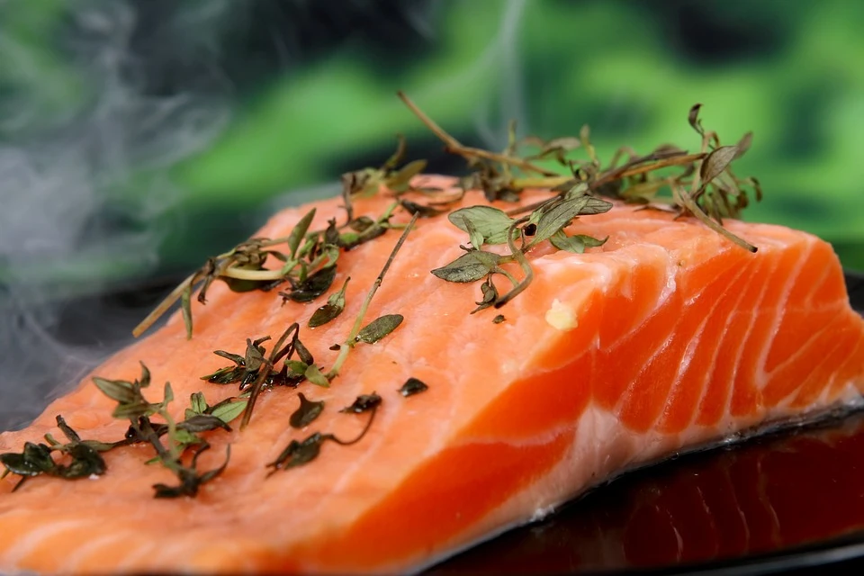

A CAMPUS DINING GRANT PROPOSAL
Know Your
Plate.
Help students see what they’re ordering at Local Point.
We’re asking the UW administrators who allocate campus dining funds to support a small pilot at Plate, a counter at Local Point. The pilot would add photos of actual servings and short descriptions checked by the kitchen to Plate’s rotating lunch and dinner menu.

WHY IT MATTERS
An unfamiliar name can make lunch harder to choose.
“it was hard for me to try new things out”
Ricky recalled passing over unfamiliar options when he first arrived on campus. His account comes from interviews with 19 first-year international students at one U.S. university.
When a dish is unfamiliar, its name alone can leave students guessing about what it contains and how it looks. That can make it harder to decide whether to try it.
THE GAP AT LOCAL POINT
What comes on a “Loaded Baked Sweet Potato”?
The dish name leaves the toppings open. Many sections of the November 9–15 menu include brief descriptions, while Plate’s rotating lunch and dinner section lists dishes without individual descriptions.
Prices, calories, and dietary and allergen markers already help students compare options. A photo and a short description could show what a serving looks like and explain what comes on it.
Read the full original menu (PDF)OUR PLAN
From the kitchen to the menu
We propose a short pilot at Plate with kitchen staff, a student assistant, and a small group of student reviewers.
STEP 1
Prepare next week’s dishes
About a week before service, the kitchen would prepare samples from the planned menu using the same cooking methods and portions students would receive. A student assistant would photograph the servings as plated, draft short descriptions, and flag details for the kitchen to verify.
STEP 2
Refine the menu with students over 2–3 weeks
We would pay a small group of students for their time, including international students and students with different levels of familiarity with the dishes.
- Read the current menu and describe what they expect each dish to be and contain.
- See or taste the actual dishes.
- Point out confusing names and details they would want before ordering.
- Review the draft photos and descriptions and suggest changes.
We would use this feedback to refine a reusable menu template. Buell and colleagues recommend involving international students in menu development and food preparation. At Plate, that could mean asking students which words they’d change and what they still can’t tell from a photo. Buell et al.
STEP 3
Publish and maintain
Once the kitchen verifies the main components, preparation, and wording, the menu team would publish the photo and description. Depending on the dish, that could mean naming its main ingredients, explaining the cooking method, identifying a sauce or topping, or describing a useful detail about texture, flavor, or how it’s served.
After the pilot, a designated student assistant or menu staff member would add new dishes, reuse checked entries, and update photos and text when recipes, plating, or portions change substantially. Students would have a simple way to flag unclear or mismatched entries. Paid group tastings would end with the pilot.
This follows Kim and colleagues’ advice to pay attention to food photography and refresh images as dishes change. Kim et al.
MENU PREVIEW
PNW @ Plate
Rotating lunch and dinner · November 9–15, 2026
Illustrative images; pilot photos would show actual Local Point servings. Proposed descriptions are subject to kitchen confirmation. See original nutrition and allergen information.
- See what the dish looks like
- Understand unfamiliar names
- Know the main components
Build a plate
Choose a protein and two sides. Additional sides & desserts available at an additional cost.
FUNDING & MAINTENANCE
What it would take to run the pilot
We’re asking UW’s campus dining budget decision-makers to fund the pilot. Housing & Food Services would coordinate with the Plate kitchen, schedule time for student staff, and arrange for someone to keep the menu current.
What funding would cover
- Student participant compensation during the pilot
- Sample preparation
- Student photography and description-writing work
- Menu layout and publication
- Ongoing updates
Keeping the work manageable
- Preparing samples takes kitchen time.
- Start with Plate’s rotating lunch and dinner menu and agree on a prep window with kitchen staff before the pilot begins.
- Updating the menu takes staff time each week.
- Keep a shared set of checked photos and descriptions so repeat dishes can go back on the menu with the same entry.
- A photo can fall out of date.
- Photograph real servings, have the kitchen verify entries, and refresh them when a dish changes.